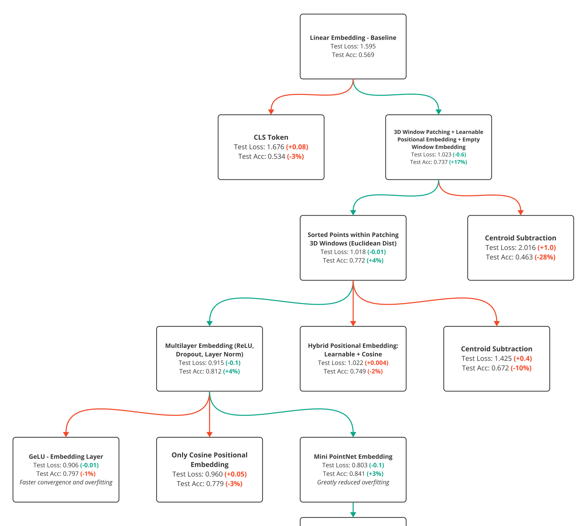

Tech Tree - A Systematic Approach to ML Research (and Beyond)

A systematic approach to machine learning research, offering a structured way to visualize and document each experiment’s impact. By highlighting both successes and failures, it aims to refine mental models, encourage reproducibility, and inspire more efficient collaboration.